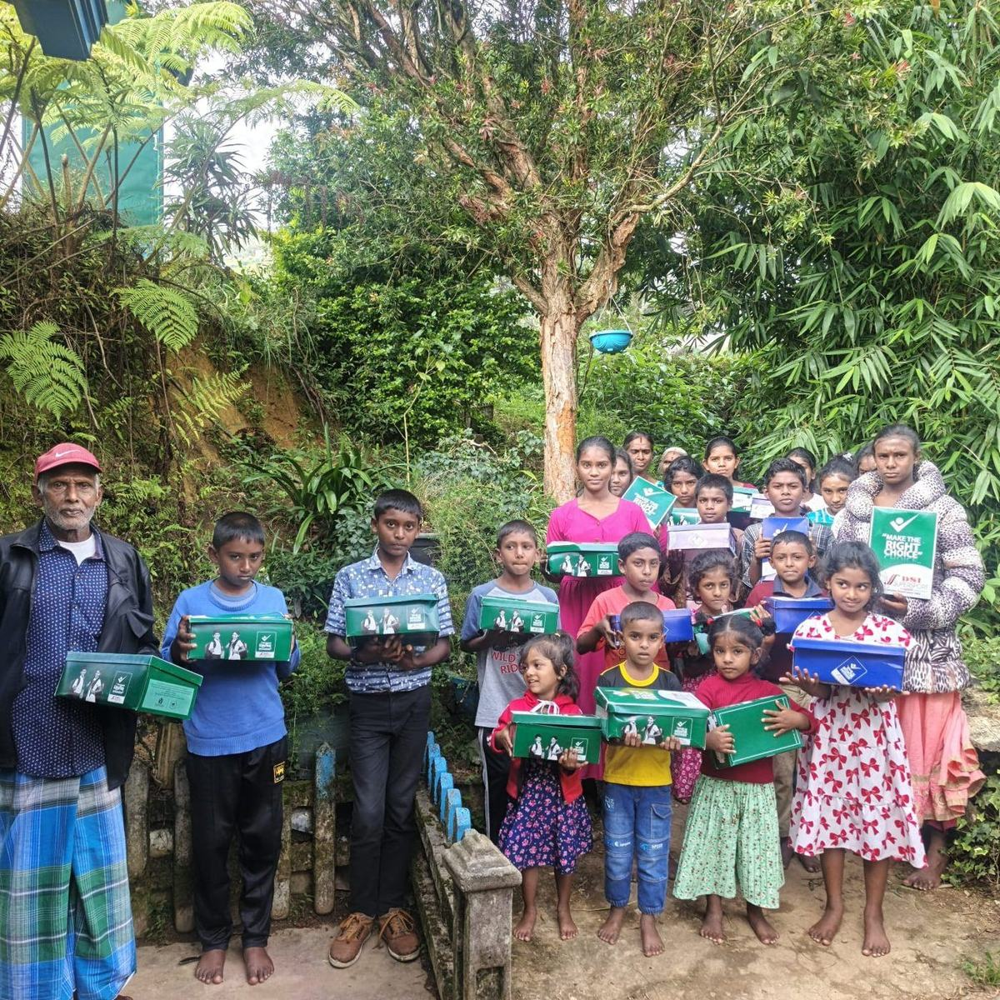
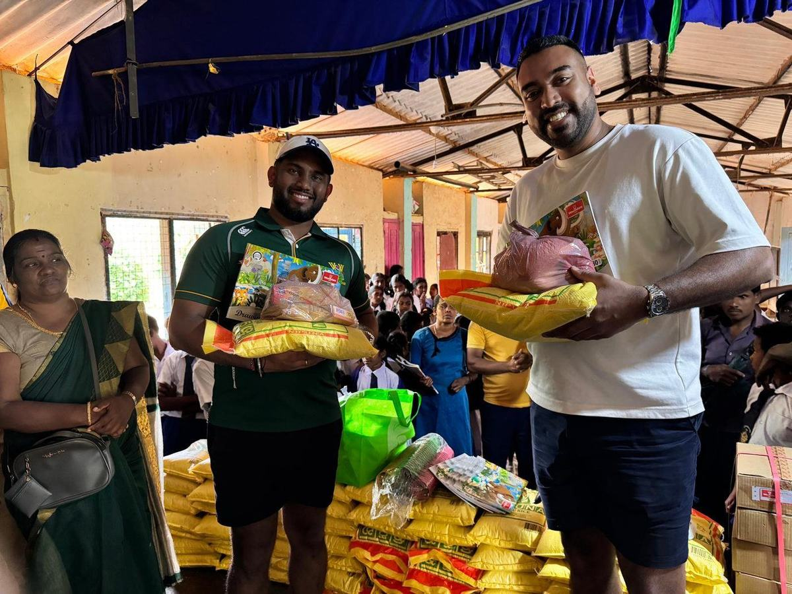
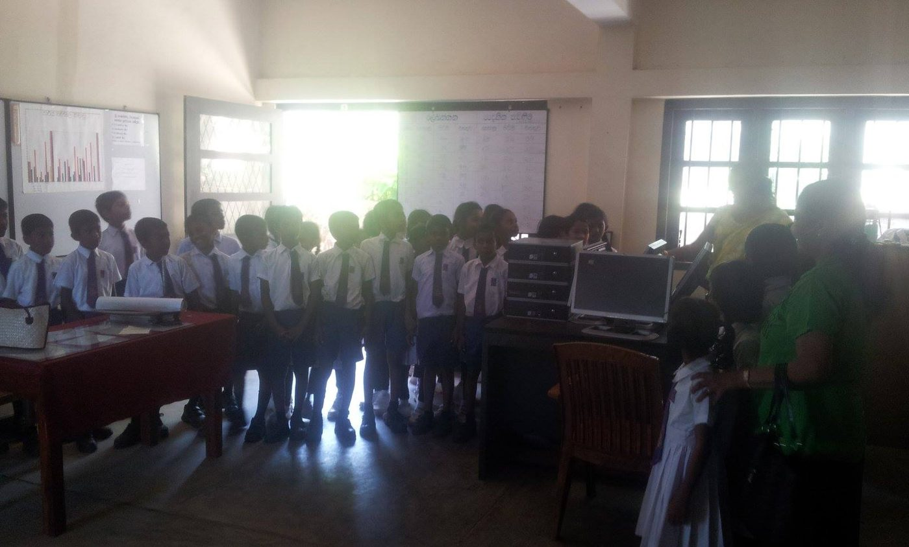

Shoes and wet weather gear, 45 children
Forty-five orphaned or single-parent children supported with shoes and rain coats during a severe weather event in the highlands, delivered directly through our community contacts on the ground.
A dated record of every distribution, newest first. Small, specific and verifiable rather than impressive.
This fund formalises something that has been happening quietly for years. For more than a decade we have been travelling to Sri Lanka, identifying communities that need basic support, and giving directly through trusted relationships on the ground.
Support is given as goods rather than cash. Every entry below is a set of specific items bought in Sri Lanka and delivered directly to the people named in it.
Entries marked Direct giving were made personally by the founders. Entries marked Endowment distribution are funded by the returns on the corpus. Over time the second replaces the first, which is the point of building the fund.
We publish what was given, to how many, and where. We do not publish estimates of lives changed, and we do not count the same distribution twice.
Photographs are published with the consent of those shown. See our privacy statement.

Forty-five orphaned or single-parent children supported with shoes and rain coats during a severe weather event in the highlands, delivered directly through our community contacts on the ground.

Five hundred displaced people supported after Cyclone Ditwah with books, dry rations and medicine, distributed through trusted local relationships in the Nuwara Eliya district.

A computer lab established at a small village school in the south of the island, giving students their first access to digital learning resources.
The endowment is in its founding phase. Distributions in the early years are small and are made through the relationships described above rather than through an open application round.
As the corpus grows, the annual distribution grows with it, and the entries on this page should get larger and more frequent without the fund ever spending its capital.
Each distribution is announced on the updates page and appears here. Totals and investment returns are reported annually after the AGM.
Every contribution to the corpus increases what the fund can give, every year, permanently.
Ways to give What we fund